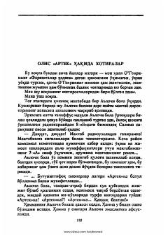

OAQishloq o'quvchisining afsonaviy Artek lageriga yo'llanma olishi haqidagi xotiralar.
Ushbu asarda qishloq maktabining o'quvchisiga O'ttittifoq pionerlar lageri «Artek»ka yo'llanma berilishi va bu xushxabarning qishloq bo'ylab tarqalishi haqidagi esdaliklar hikoya qilinadi. Bosh qahramonning hayajonli lahzalari, o'qituvchilarining iliq tilaklari va qishloqdoshlarning samimiy munosabatlari ta'sirli tarzda tasvirlangan.